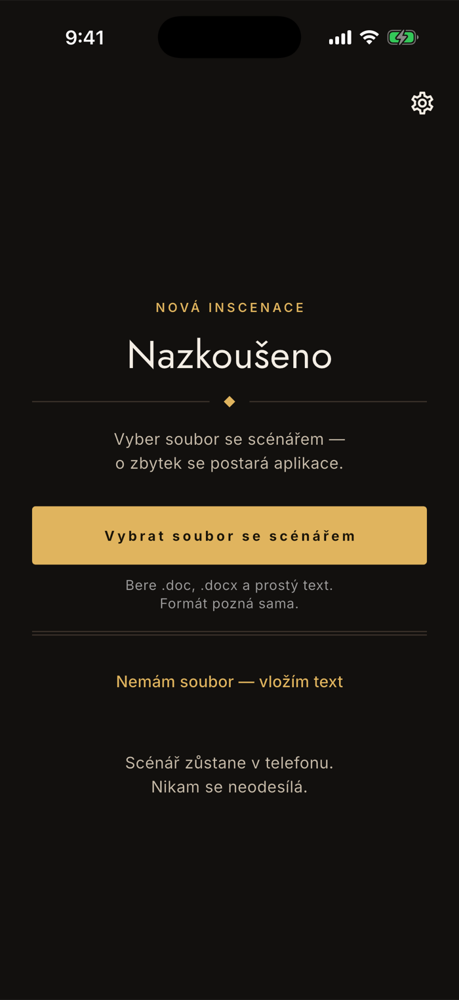
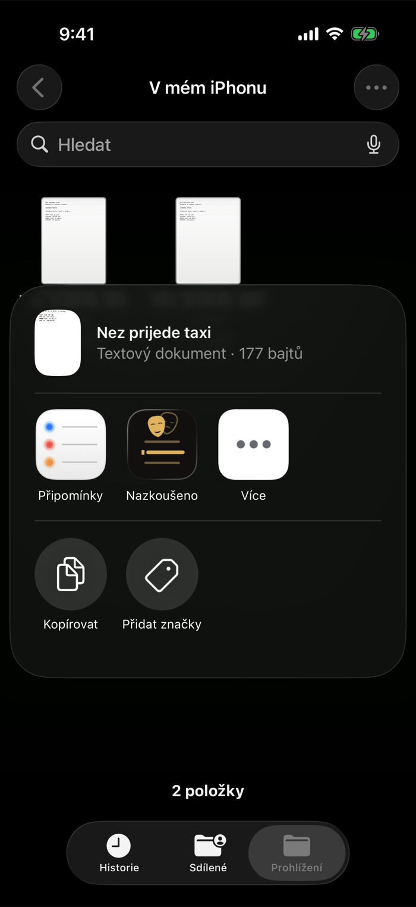
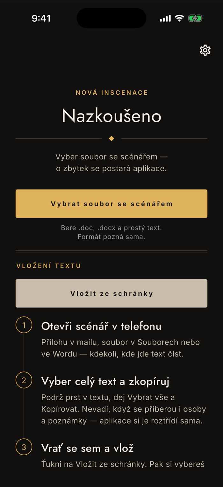

Začínáme
Jak dostat scénář do appky
Tři cesty. Stačí ti jedna — vyber tu, která odpovídá tomu, kde scénář právě máš. Všechny končí stejně: vybereš svou roli a můžeš drilovat.
Cesta 1
Vyber soubor v appce
Nejkratší cesta, když už scénář v telefonu leží. Appka bere .doc, .docx a prostý text — tedy to, v čem scénáře po divadlech reálně kolují.
Ulož scénář do telefonu
Přílohu z mailu podrž a dej Uložit do Souborů. Když už soubor v telefonu máš, tenhle krok přeskoč.
Ťukni na Vybrat soubor se scénářem
Hlavní tlačítko na úvodní obrazovce. Formát appka pozná podle obsahu souboru, ne podle přípony — u přeposílaných scénářů přípona často lže.
Zkontroluj nález a vyber roli
Appka ukáže obsazení, počet replik a místa, která jí přišla divná — třeba překlep ve jméně mluvčího. Opravíš je na jedno ťuknutí, vybereš svou roli a jsi hotový.

Cesta 2
Sdílej scénář z appky, kde ho máš
Když ho nechceš nikam ukládat. Funguje odkudkoli, kde je tlačítko Sdílet — z mailu, ze Souborů, z Wordu, z cloudového disku.
Najdi scénář tam, kde ho máš
Nemusíš ho kopírovat ani přesouvat. Zůstane, kde je.
Ťukni na Sdílet a vyber Nazkoušeno
Když appku v řádku nevidíš, ťukni na Více a najdi ji v celém seznamu.
Appka se otevře už se scénářem
Odtud je to stejné jako u výběru souboru — kontrola nálezu, výběr role, hotovo.

Cesta 3
Vlož text ze schránky
Záchranná cesta pro všechno ostatní — PDF, zprávu v chatu, text z webu. Projde i tam, kde by appka soubor nepřečetla.
Otevři scénář v telefonu
Přílohu v mailu, soubor v Souborech nebo ve Wordu — kdekoli, kde jde text číst.
Vyber celý text a zkopíruj
Podrž prst v textu, dej Vybrat vše a Kopírovat. Nevadí, když se přiberou i osoby a poznámky — appka si je roztřídí sama.
V appce ťukni na Nemám soubor — vložím text
A pak na Vložit ze schránky. Kdyby schránka nespolupracovala, jde text vložit i ručně do pole pod tím.

Když appka scénář nepřečte
Appka pozná repliku podle toho, že je jméno mluvčího oddělené od textu — tabulátorem, několika mezerami, nebo dvojtečkou (ANNA: text). Vybere si tu konvenci, která ve scénáři převažuje, takže na pár řádcích, které vypadají jinak, nezáleží.
Co nestačí, je jediná mezera mezi jménem a textem — tak vypadá typicky kopie z PDF. Pak zkuste sehnat scénář ve Wordu; tak vám ho režisér nebo agentura nejspíš poslali.
Nic tím nezkazíte. Když se text nepodaří rozdělit, appka to řekne rovnou a nic se neuloží. Zbytek odpovědí je v častých otázkách.
Scénář zůstane v telefonu
Ať zvolíte kteroukoli cestu, text se zpracuje přímo na zařízení. Appka nemá server, nevolá žádné rozhraní a scénář nikam neodesílá — je to podmínka, ne funkce. Podrobně v zásadách ochrany osobních údajů.
Něco v návodu nesedí, nebo appka dělá něco jiného?
contact@lukashula.cz